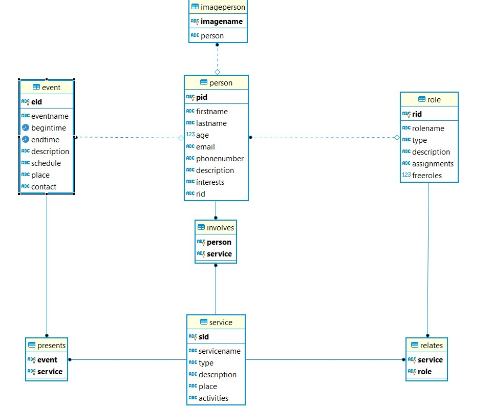

Documentation of the Backend part
Deliverable D1
General group information
| Member n. | Role | First name | Last Name | Matricola | Email address |
|-----------|---------------|------------|-----------|-----------|----------------------------|
| 1 | administrator | Gerlando | Re | 10687924 | gerlando.re@mail.polimi.it |
Links to other deliverables
- Deliverable D0: the web application is accessible at this address.
- Deliverable D2: the YAML or JSON file containing the specification
of the app API can be found at this address
- Deliverable D3: the SwaggerUI page of the same API is available at this address.
- Deliverable D4: the source code of D0 is available as a zip file at this address).
- Deliverable D5: the address of the online source control repository is available here. We hereby
declare that this is a private repository and, upon request, we will
give access to the instructors.
Specification
Web Architecture
The Architecture has been tought as a Three Layer Architecture: the Data Layer is composed of the Postgres database managed on Heroku
and data contained in it are retrieved by the Application Layer that contains the various services and controllers that interact with the
APIs. These APIs are used by the Presentation Layer containing html, css and Javascript files used to visualize the static pages and dynamic pages.
In particular, dynamic pages are generated by using the data retrieved from the DB through the APIs and changing these pages dynamically once these data are retrieved.
A very simple diagram summarizing the general the structure of the project is the following:
 So we render and build dynamically pages by retrieving data in the application layer through the APIs. Then after the response
arrives we can write the results on the page.
So we render and build dynamically pages by retrieving data in the application layer through the APIs. Then after the response
arrives we can write the results on the page.
API
REST compliance
Describe here to what extent did you follow REST principles and what are
the reasons for which you might have decided to diverge. Note, you must
not describe the whole API here, just the design decisions.
OpenAPI Resource models
Describe here synthetically, which models you have introduced for
resources.
For the models of the APIs developed for the website, I introduced four models that fully describe the data useful for describing
the entities in the Database and the main objects which data need to be visualized in the website. These models are:
- Person: A person that has an identifier (pid), and other personal informations like first and last name, phone number and email and the role of the person.
- Role: A role has an identifier (rid), a name a description and the number of free positions for that specific role within the association.
- Service: An offered service has, of course, an identifier (sid), a name and other important information like the activities done in it or the description.
- Event: An event has and identifier (eid), the timestamps for the begin and end time of the event, and other important fields describing the event (description, schedule...).
The full description of these models can be found in the specification of the APIs.
Data model
Describe with an ER diagram the model used in the data layer of your web
application. How these map to the OpenAPI data model?
The Database is structured in such a way that is totally equal to the data model described in the OpenAPI Resource models,
since these APIs are built upon this idea of the database. Here the ER Diagram generated:

Implementation
Tools used
I used the Node.js framework for the developing of the backend part, with the heavy use of the knex module for the
creation of the connection and queries to the database. Then I used JQuery in the Presentation Layer in order to
dynamically render the various served pages with the content retrieved from the database.
For the development of the APIs used in the website i used the Swagger Editor and OpenAPI specification.
Bootstrap has also been used for the front-end part, but no pre-built template.
Discussion
Describe here:
- How did you make sure your web application adheres to the provided
OpenAPI specification? Which method did you use to test all APIs
endpoints against the expected response?
- Why do you think your web application adheres to common practices to
partition a REST-based web application (static assets vs.
application data)
- Describe synthetically why and how did you manage session state,
what are the state change triggering actions (e.g., POST to login
etc..).
- Which technology did you use (relational or a no-SQL database) for
managing the data model?
## Other information
### Task assignment
Describe here how development tasks have been subdivided among members
of the group, e.g.:
> - Foo worked on front end (80%) and OpenAPI Spec (20% of the time)
> - Bar worked on ....
### Analysis of existing API
Describe here the research of (full or part of) existing APIs that are similar
in objectives and scope to the one implemented, that have possibly guided
implementation choices (these should not be necessarily OpenAPI
implementations). Toy APIs (such as the Swagger's Pet Store) or the example
shown during lectures are not a valid response.
Use TWO or more items of the form:
> We took (full/partial) inspiration from API <XYZ>(link) for the part of the
> API that manages <ABC> because of <REASON>.
Or
> For the part of the API that manages <ABC> we considered/studied <XYZ>(link)
> because of <REASON> but wasn't completely fitting to our purpose because of
> <REASON>.
### Learning outcome
What was the most important thing all the members have learned while
6
developing this part of the project, what questions remained unanswered,
how you will use what you've learned in your everyday life?
Examples:
- Foo learned to write SQL queries and Javascript but wanted to know
more about caching, he's probably going to create his own startup
with what she has learned
- Bar learned how to deploy on a cloud platform, he would have liked
to know more about promises for asynchronous code..